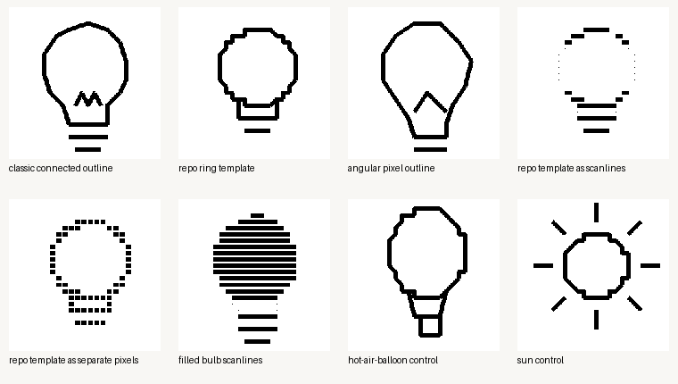
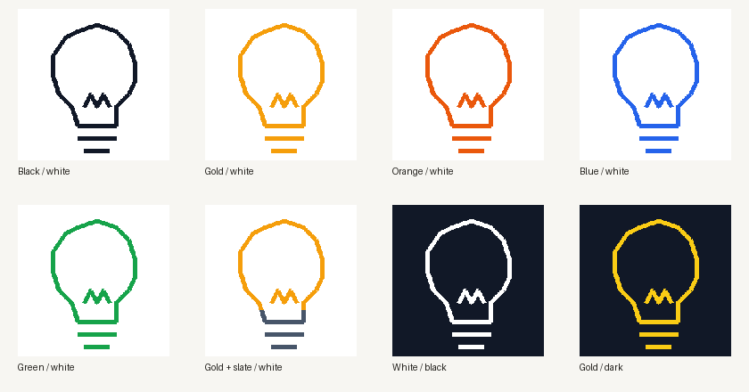

Inference from D1/D2:
Use MobileCLIP2-S0, precompute the game-label text embeddings, and deploy only its image encoder.
Apple publishes the implementation and checkpoints for MobileCLIP2. The model is designed for efficient image–text matching and zero-shot classification Apple repository [S1]. The exact S0 checkpoint used here is published on Hugging Face under Apple’s research-model license Apple weights [S2].
Six bulb variants plus hot-air-balloon and sun controls. This is a local exploratory result, not a population accuracy estimate data [D1].
The shape test
The set deliberately mixes connected strokes with raster-native constructions. Each image was evaluated against the same ten labels used by the current local scorer. Local benchmark [D1]

Model comparison
| Model | Deployment weight | Bulbs ranked first | Controls correct | Assessment |
|---|---|---|---|---|
| SqueezeNet 1.1, ImageNet | 4.73 MiB | 0 / 6 | 0 / 2 | Wrong domain |
| MobileNetV3-small, ImageNet | 9.83 MiB | 0 / 6 | 0 / 2 | Wrong domain |
| Local 10-class sketch CNN | ≈0.60 MiB FP32 | 3 / 6 | 1 / 2 | Needs canvas augmentation |
| MobileCLIP2-S0, vision only | 43.5 MiB FP32 | 6 / 6 | 2 / 2 | Best tested |
The official MobileNetV3-small checkpoint has 2.54M parameters and a 9.8 MB weight file TorchVision [S3]. TorchVision likewise publishes SqueezeNet’s ImageNet weights TorchVision [S4]. Local outcomes, parameter counts, and measured sizes are recorded in D1.
MobileCLIP2 shape scores
Every bulb was ranked first, including representations made from disconnected pixels or horizontal scanlines. The softmax is restricted to ten candidate labels, so these values measure separation inside this test—not real-world certainty. Method and results [D1]
| Drawing | Expected | Top prediction | Closed-set score |
|---|---|---|---|
| Classic connected outline | light bulb | light bulb | 98.62% |
| Repository ring template | light bulb | light bulb | 64.01% |
| Angular pixel outline | light bulb | light bulb | 92.51% |
| Template as scanlines | light bulb | light bulb | 88.60% |
| Template as separate pixels | light bulb | light bulb | 78.21% |
| Filled bulb scanlines | light bulb | light bulb | 88.54% |
| Hot-air-balloon control | hot air balloon | hot air balloon | 40.49% |
| Sun control | sun | sun | 97.66% |
Does it support color?
Yes: the image encoder consumes RGB and the object prediction remained stable across all tested palettes. With identical geometry, “light bulb” ranked first for black, gold, orange, blue, green, multicolor, inverted, and dark-background versions. Color benchmark [D2]
Color-word probe
The auxiliary probe correctly named orange, blue, green, white-on-black, and yellow-on-dark. It called gold “orange” and called black-on-white “white,” apparently attending to the dominant background. Inference from D2: color is usable contextual evidence but is not reliable enough to grade precise palette choices.

| Palette | Light-bulb rank | Closed-set object score | Color probe |
|---|---|---|---|
| Black / white | 1 | 98.85% | white, then black |
| Gold / white | 1 | 98.80% | orange, then yellow |
| Orange / white | 1 | 98.65% | orange |
| Blue / white | 1 | 98.46% | blue |
| Green / white | 1 | 98.45% | green |
| Gold + slate / white | 1 | 99.04% | orange, then yellow |
| White / black | 1 | 98.82% | white |
| Gold / dark | 1 | 98.92% | yellow |
Practical deployment
What ships
The measured full model has 74.8M parameters and occupies 285.8 MiB in the local cache. Its image encoder accounts for 11.4M parameters, or about 43.5 MiB in FP32. Implementation inference from D1: precomputing one 512-dimensional text embedding per game label removes the need to ship the text encoder. Measured breakdown [D1]
What still needs validation
The local median was 116.8 ms for one image-encoder pass on CPU after warm-up. Inference from D1: once-per-turn scoring is feasible, but ONNX export, INT8 quantization, and threshold calibration must be measured rather than assumed.
A larger evaluation should include incomplete turn-by-turn canvases, erasures, collisions, every target class, and deliberately adversarial patterns.
Method and limitations
The current repository scorer discards color and compares a binary mask to one mean bitmap per class current implementation [L1]. The replacement candidates were evaluated without changing repository code.
The tiny CNN was trained on 1,500 Google Quick Draw bitmap samples per class and checked on the next 100. Google documents the 28×28 bitmap format and makes the underlying dataset available under CC BY 4.0 Google dataset [S5]. Its 91.2% held-out result did not transfer cleanly to the synthetic canvas styles, demonstrating domain shift rather than production readiness D1.
Uncertainty: eight synthetic images are enough to reject obviously unsuitable models, but not enough to establish a production pass threshold or false-positive rate. The next benchmark should use hundreds of saved game canvases and human labels.
References and evidence
- Apple ML Research — MobileCLIP and MobileCLIP2 official implementation [S1].
- Apple — MobileCLIP2-S0 official checkpoint and license [S2].
- PyTorch — MobileNetV3-small official weights and metadata [S3].
- PyTorch — SqueezeNet models and official weights [S4].
- Google Creative Lab — Quick Draw dataset documentation and license [S5].
- Local shape/model benchmark data [D1].
- Local RGB robustness and color-word probe data [D2].
- Shape test image asset [A1]; color test image asset [A2].
![Shape test image asset [A1]](assets/shape-variants.png){kind=link}
![color test image asset [A2]](assets/color-variants.png){kind=link}